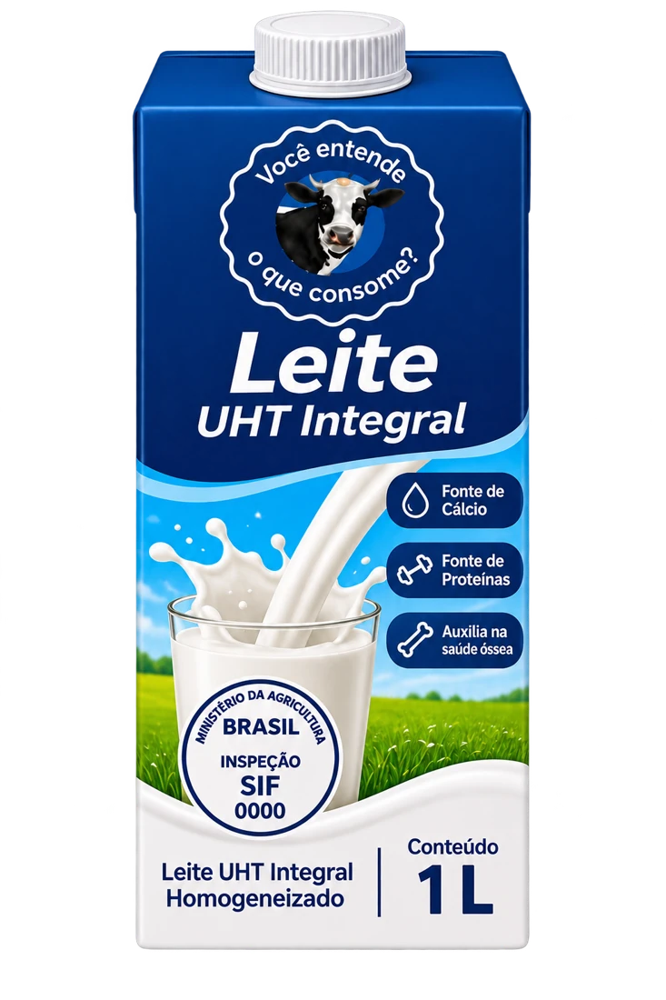
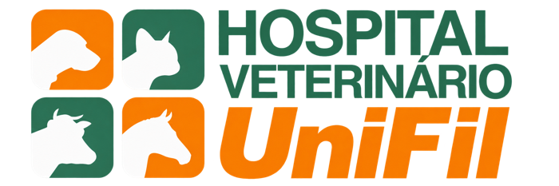

Educação alimentar
Você sabe o que
está consumindo?
Explore as embalagens e descubra o que cada informação do rótulo significa!

Toque no + da embalagem para saber mais.
Leite, produto 1 de 6
Explorar a caixa de leiteCatálogo de embalagens
Explore os rótulos
Escolha um produto para descobrir o que a embalagem conta.
Aprenda a reconhecer
O que esses símbolos significam?
Você já viu algum deles no supermercado? Veja a imagem e descubra o que ela informa sobre o alimento.
Os exemplos são para reconhecimento educativo e não certificam nossas embalagens fictícias. A presença e o formato dos símbolos dependem do produto e do órgão responsável. Conteúdo em revisão antes da publicação.
Por trás do nome
Parece igual.
Mas tem o mesmo nome?
Mussarela, bebida láctea, apresuntado… O nome do alimento conta sobre sua composição e seu modo de produção. Escolha um produto para descobrir.
E quando aparece a palavra “tipo”?
1 Encontre um nome
Ou explore por categoria Todos os temas
Busque um nome ou escolha uma categoria para começar.
2 Toque em um resultado
Catálogo em expansão: produtos dos cinco grandes grupos de alimentos de origem animal, ingredientes e termos de processamento. Em “Pode ter origem animal?”, a origem do ingrediente depende da fabricação e pode precisar de confirmação com o fabricante. Em “Receita variável”, a presença de ingredientes de origem animal depende da composição do alimento. Não reúne todas as variedades, cortes e denominações existentes. Os resumos são educativos e estão em revisão antes da publicação; consulte o rótulo completo e as normas aplicáveis.
Sobre o projeto
Da universidade
ao supermercado.

Você sabe o que realmente está levando para casa quando escolhe um alimento?
O “Você entende o que consome?” é um projeto de extensão universitária que conta com a participação de alunas do 4º ano de Medicina Veterinária da UniFil — Centro Universitário Filadélfia, em Londrina (PR), como parte de uma disciplina ministrada pela professora Cássia Valeria Hungaro Yoshi. Como contribuição ao projeto, as alunas criaram este site e o podcast educativo.
Nossa proposta é aproximar o conhecimento científico do cotidiano dos consumidores, tornando as informações presentes nos rótulos dos alimentos de origem animal mais acessíveis e fáceis de compreender.
Por meio de embalagens interativas e conteúdos educativos, buscamos ajudar você a identificar informações importantes sobre inspeção sanitária, validade, conservação, ingredientes e composição nutricional.
Alunas participantes e responsáveis pela criação do site e do podcast:
- Jhennifer Kotaka Munhoz
- Maria Eduarda Ollier Shime
- Sthefanny Carolina Rosseto
As embalagens apresentadas são exemplos fictícios, desenvolvidos exclusivamente para fins educativos. O conteúdo está em revisão para publicação.